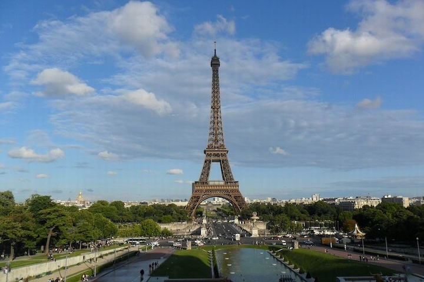
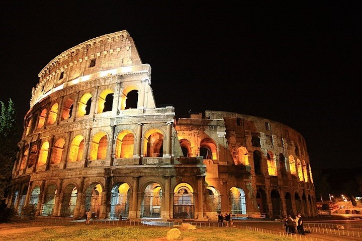
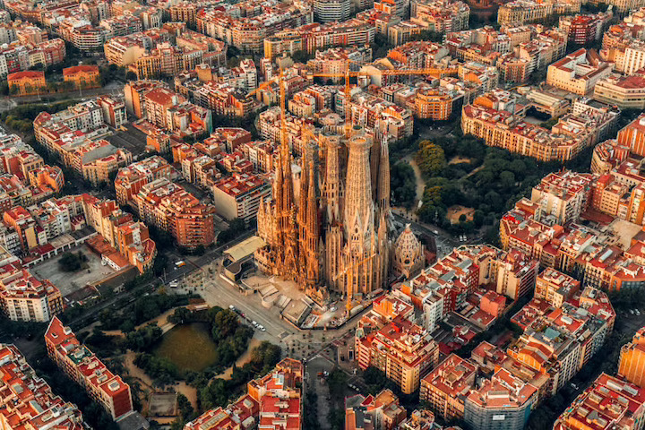
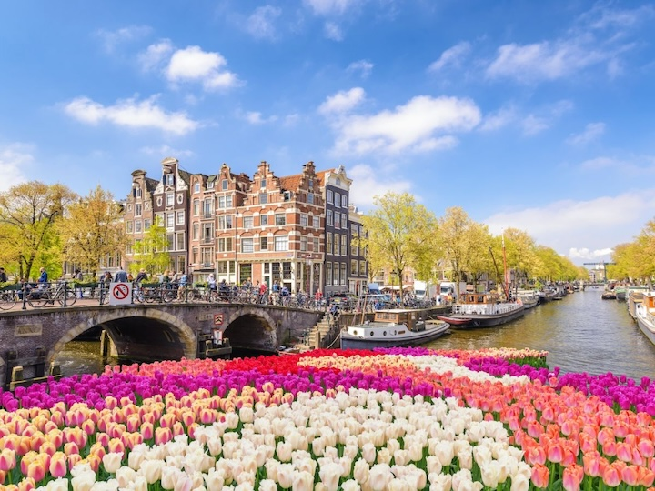
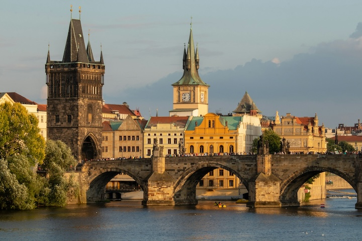
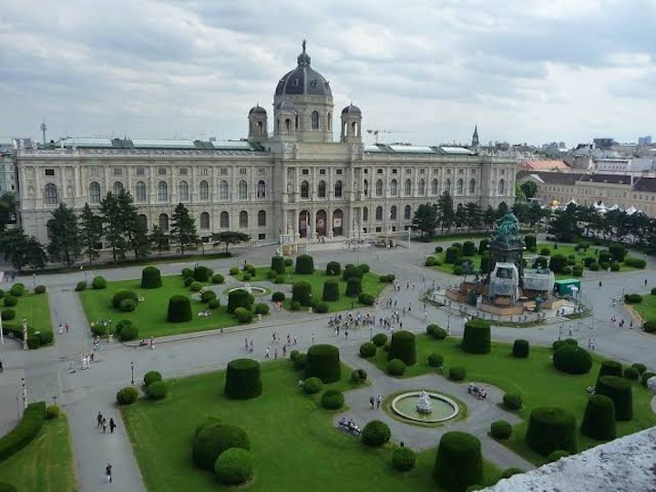

Franciaország
A fények városa híres az Eiffel-toronyról, hangulatos utcáiról és világhírű múzeumairól.

Olaszország
Az örök város ókori emlékei, terei és különleges hangulata minden látogatót lenyűgöznek.

Spanyolország
A mediterrán város Gaudí épületeit, homokos tengerpartot és pezsgő kulturális életet kínál.

Hollandia
A csatornák, a kerékpárok és a keskeny, színes házak teszik igazán jellegzetessé.

Csehország
A történelmi belváros, a Károly híd és a várnegyed mesébe illő látványt nyújt.

Ausztria
A császárváros elegáns palotákkal, gazdag zenei hagyományokkal és rendezett parkokkal vár.
11. évfolyam – HTML/CSS számonkérés